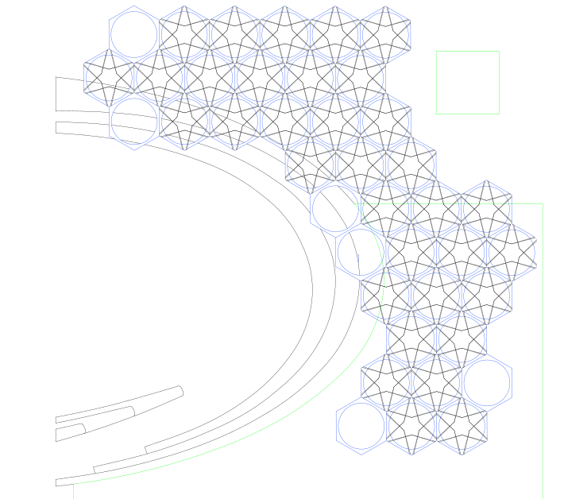

Slower
Faster

"The difference between a mediocre city and a great city are great parks and a fabulous outdoor space" But what makes a good outdoor space?
Outdoor comfort is influenced by many environmental parameters such as solar radiation, infrared radiation from the surroundings and from the sky, air temperature, humidity and wind speed. Manipulating these parameters, and considering user clothing and activity levels, allows outdoor comfort to be assessed and compared between different scenarios.
With this pavilion we confront thermal comfort models with occupancy patterns in order to find correlations between current comfort models and behaviour in an outdoor setting
By introducing passive and active strategies that are tailored to local climatic conditions and creating a design which reacts with people and changes over time, we can maximise comfort and create truly livable cities.